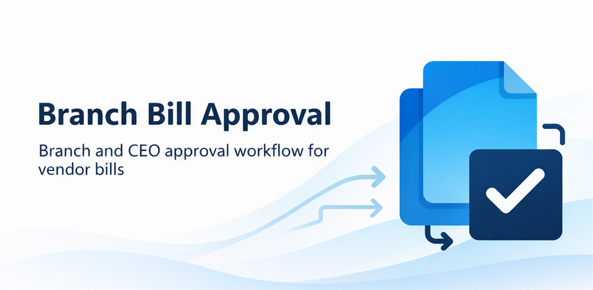
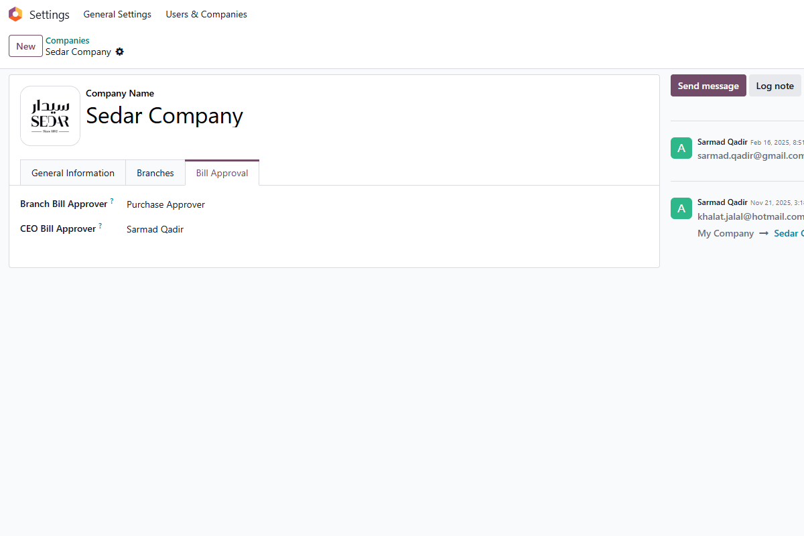
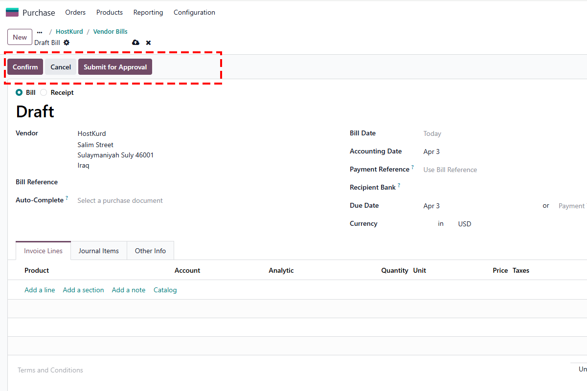
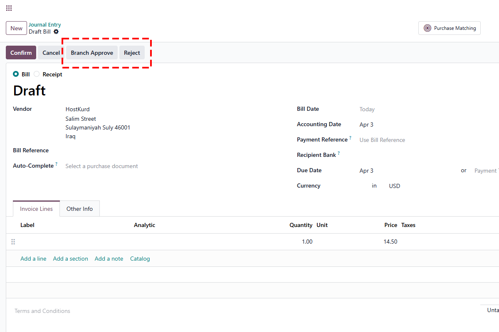

Vendor Bill Approval Workflow
A professional vendor bill approval workflow for Odoo 19 with Branch and CEO approval routes.
Overview
This module adds a structured approval workflow for vendor bills in Odoo 19. Users can select an approval route directly on the vendor bill, and the system will automatically manage the correct approval flow.
It is designed to simplify internal financial controls while keeping the process clear and easy to use.
Approval Routes
Not Required
Bills can be posted directly without any approval.
Branch Only
Bills require approval from the Branch Approver only.
Branch then CEO
Bills must be approved by Branch first, then by CEO.
CEO Only
Bills are sent directly to the CEO Approver.
Main Features
- Approval route selection directly on vendor bills
- Branch and CEO approval support
- Multi-step approval workflow
- Rejection with reason
- Posting blocked before approval
- Automatic activities for approvers
- Approval history tracking
- Clean workflow controlled by one approval route field
How It Works
- Create a vendor bill
- Select the approval route
- Submit the bill for approval
- Assigned approver reviews the bill
- Approver approves or rejects
- Once approved, the bill can be posted
Configuration
Configure the following company-level approvers:
- Branch Bill Approver
- CEO Bill Approver
The system uses these users automatically during the selected approval route.
Screenshots
Company Management "Bill Approval" section

Bill Approval management section

Submit for approval button

Chatter and Information Section

Notification and todo items

Approve and Reject Button

Dependencies
This module depends on the following Odoo apps:
- Accounting (`account`)
- Discuss / Activities (`mail`)